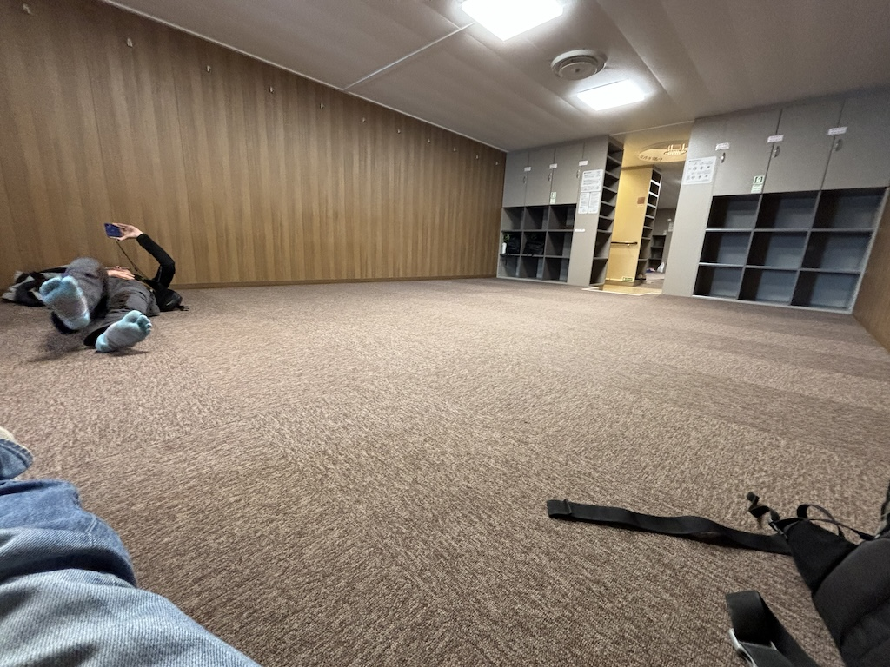
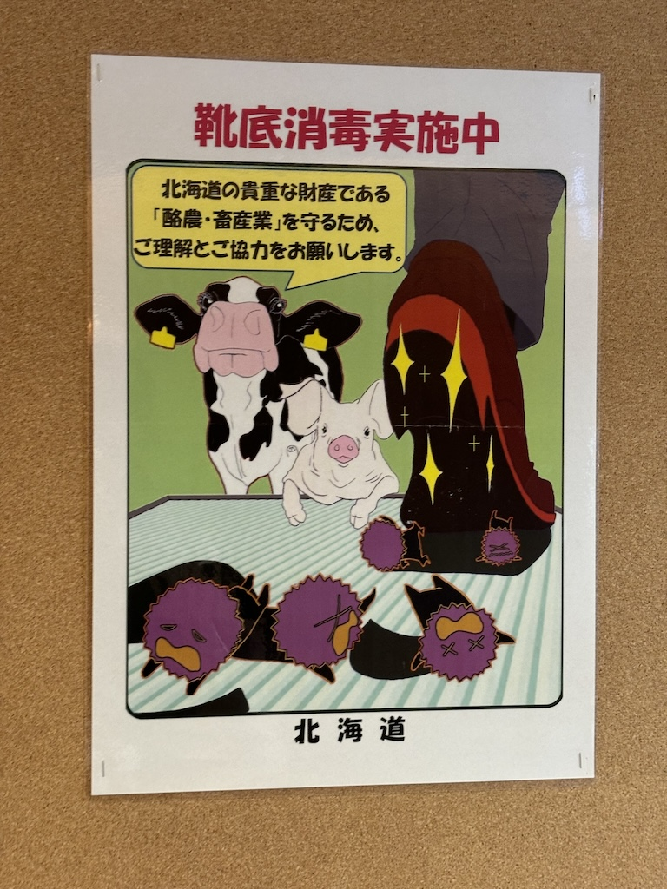
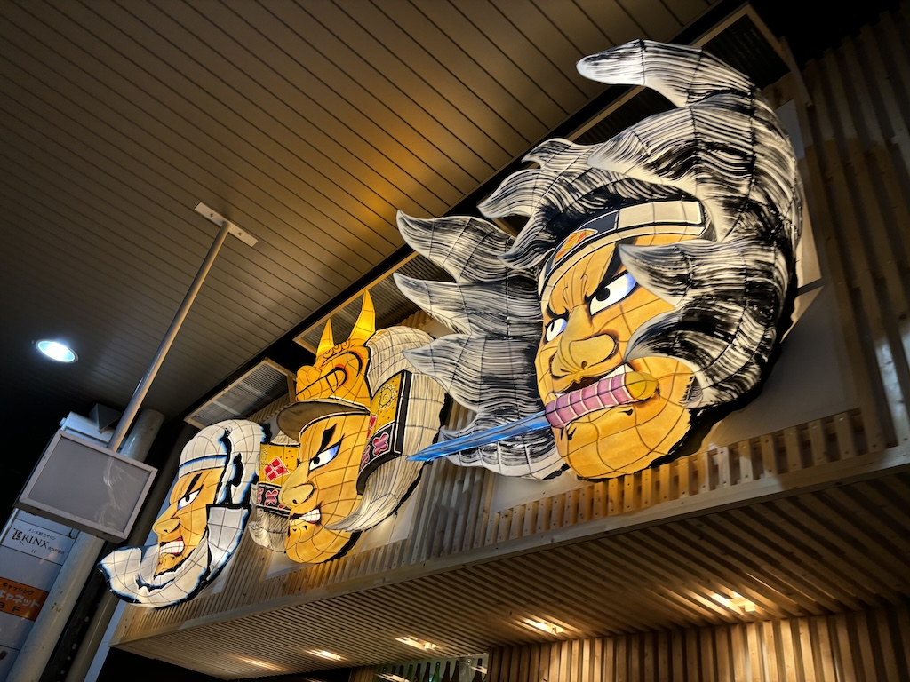
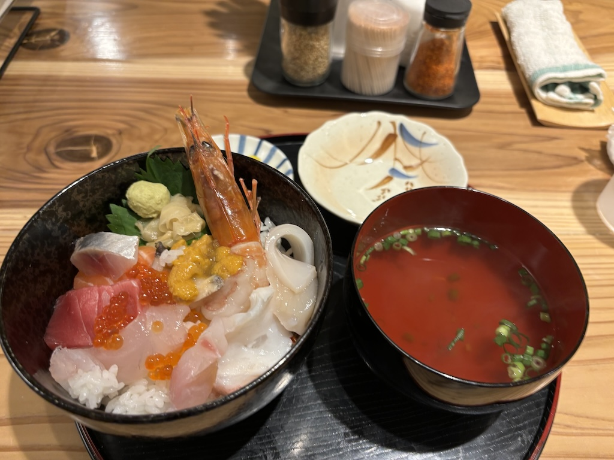
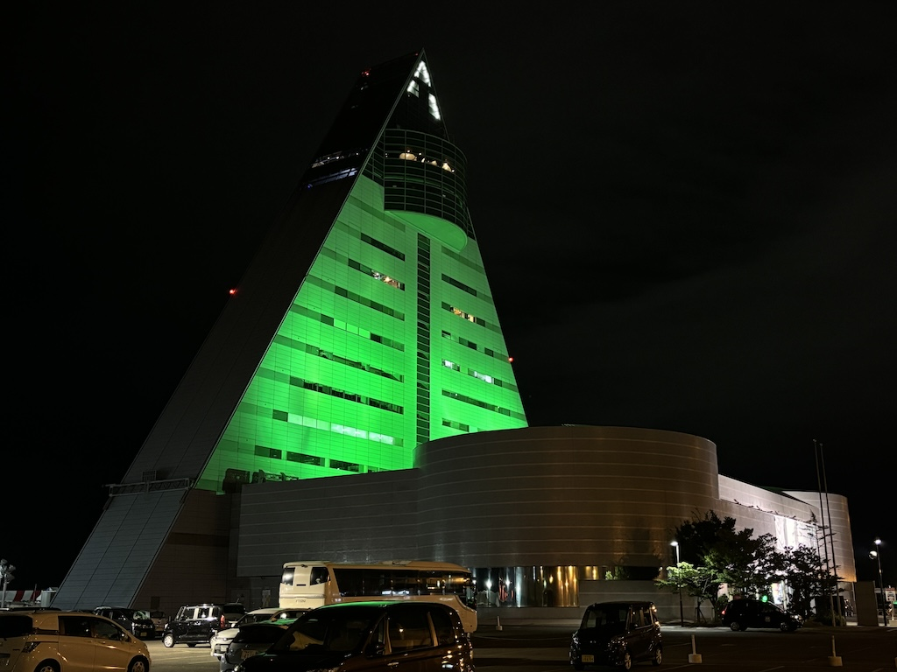
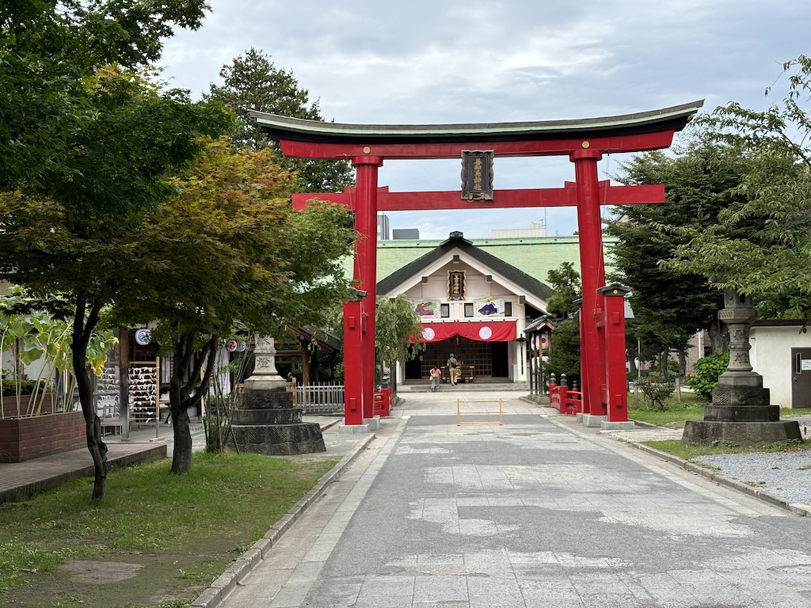
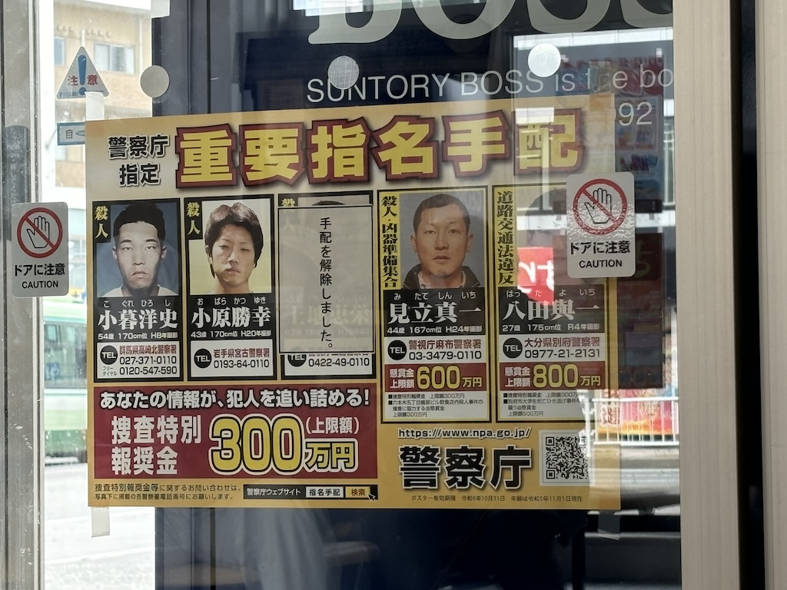

11th to 12th September 2024
青森から手紙を書いています
I was hoping riding the ferry across the Tsugaru Strait would be more novel than taking the Shinkansen, but sadly the journey wasn't as good as I was expecting. Looking forward to watching the boat navigate both island bays I was hoping this would be not only cheaper but also provide a view of the area. When booking my seats I opted for the cheapest option, which with this ferry company is a padded room to wait in with however many people book that journey.
This room is in the center of the ship with no windows looking out to sea. They also didn't allow anyone to sit or stand outside the boat, I suppose due to sea conditions. A shame, but a good example of getting what you pay for. I did see this cool advert asking passengers to disinfect their shoes to avoid germs that could affect the Hokkaido dairy industry.
After arriving in Aomori from the ferry journey I discovered there was no way out of town towards Lake Towada until the morning. This was the first time in my travels where I had literally no plan. No research into the town I was in. No transport booked out of town. And at this time, around 4 in the afternoon, nowhere to stay.
I walked into town in the direction of a few budget hotels Google says are good value. I haven't any reservations, but I'm hopeful there will be one with a spare bed; Surely there's space at the inn on a mid-September Thursday. A lot of shops had these warrior faces above their entrances. These large face masks are Nebuta which depict historicla warriors, mythical gods and kabuki actors. If I was here a couple weeks earlier I could have seen the Aomori Nebuta Matsuri festival where floats donning these masks drive through the streets. Sadly the timings just didn't work.
Dinner tonight was a small place serving a large variety of fish dishes. Being center stage on the menu I picked the 7-piece fish bowl. With a bowl of miso soup to start it was a great dinner.
Walking home I spot this huge green triangle building by the coastline. It is the Prefecture Tourism Information Center (ASPAM) and is a striking landmark in this reasonably quiet town.
善知鳥神社
It's the next day and I pluck up the courage to visit my first Shinto Shrine in Japan. Not wanting to offend anyone I only took this photo from the street looking into the shrine. This is Utou Shrine, one of the largest shrines in Aomori City.
After researching and learning about Shintoism in Japan I nervously enter performing the rituals appropriate for visiting and praying at the shrine. Here I notice the shrine office is open and ask in my best Japanese for a Goshuincho.
Shinto Shrines (or Jinja) in Japan will issue goshuin for a small fee. A Goshuin is a small slip of calligraphy a shrine will give you to acknowledge your visit (the phrase translates to "commemorative stamp/seal"). They typically include the date, name of the shrine and the shrines identifying stamp. Being carefully handwritten and often artistically decorated they are also beautiful.
Costing 1000 yen they handed over a beautiful goshuncho (the book you write goshuin in) with their shrines goshuin on the first page and a little pamphlet of information about the shrine. I'm exited to continue my journey across japan visiting shrines, learning about shintoism and commemorating the journey with my new goshuincho.
Heading to the bus station where my connection to Lake Towada began I swung by this moored up ferry. Inside was a museum on the former working ship and histoy around the ferries that ran between Aomori, Hakodate and the surrounding port towns. At only 500 yen I would have definitely visited it if time allowed.
The final thing of note I saw before boarding the bus was this poster in the bus station itself. This is a wanted post for 5 men I assume expected to be in Aomori City. As someone born and raised in the UK I though this was an advert, with the numbers being prices for what was on sale. I believe they are actually the bounties for finding these men. Very different to home indeed.
That's all from my 1 night stay in Aomori City. I next head deep into the center of the prefecture to Lake Towada for some time in nature. I'll speak next with you then.
Navigate home